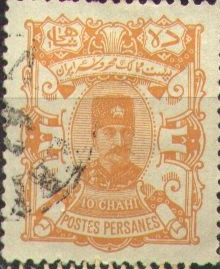
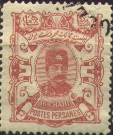
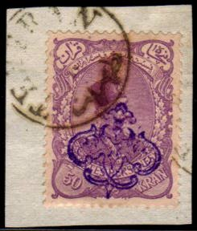
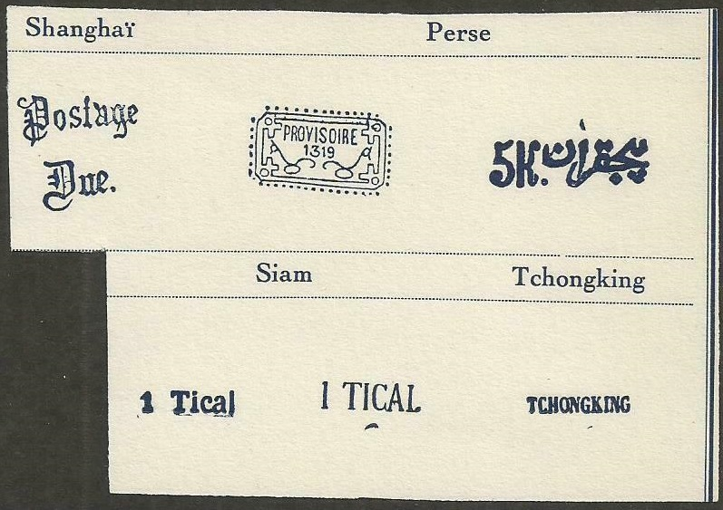
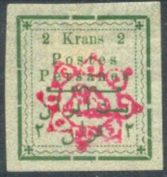

Return To Catalogue - 1870-1893 issues
Note: on my website many of the
pictures can not be seen! They are of course present in the
catalogue;
contact me if you want to purchase the catalogue.
More information about stamps from Persia, forgeries etc. can be found on: http://www.persi.com/fakes/fake.html or http://www.iranphilatelic.org/scams.htm.
For stamps of Persia issued from 1881 to 1894 click here.


10 ch orange 16 ch red 1 Kr red and yellow 2 Kr brown and blue 5 Kr blue and silver 10 Kr red and gold 50 Kr green and gold Surcharged

(Probably forged!)
'1 Kr' (violet) on 5 Kr violet and silver '2 Kr' (red or violet) on 5 Kr violet and silver
Value of the stamps |
|||
vc = very common c = common * = not so common ** = uncommon |
*** = very uncommon R = rare RR = very rare RRR = extremely rare |
||
| Value | Unused | Used | Remarks |
| 10 ch | vc | vc | |
| 16 ch | c | c | |
| 1 K | vc | c | |
| 2 K | vc | c | |
| 5 K | vc | c | |
| 10 K | vc | c | |
| 20 K | * | * | |
| Surcharged | |||
| 1 K on 5 K | * | * | |
| 2 K on 5 K | * | * | |
The 5 Kr stamp exists with overprint "1903 POSTES PERSANES" and fancy patterns and various surcharges and overprinted "KONTROLLE".
(Reduced sizes)


(Reduced sizes)
1 Kr blue 1 Kr red (1900) 2 Kr red 2 Kr green (1900) 3 Kr yellow 3 Kr brown (1900) 4 Kr grey 4 Kr red (1900) 5 Kr green 5 Kr brown (1900) 10 Kr orange 10 Kr blue (1900) 50 Kr violet 50 Kr brown (1900)
The stamps issued in 1898 exist with safety overprint (8 different types), examples:

Value of the stamps |
|||
vc = very common c = common * = not so common ** = uncommon |
*** = very uncommon R = rare RR = very rare RRR = extremely rare |
||
| Value | Unused | Used | Remarks |
| All values | vc to * | vc to * | |
The stamps issued in 1900 exist with overprint "PROVISOIRE" (1902):
Image obtained from http://www.magazzuphil.com/
Genuine overprint
Surcharged
(Genuine overprint)
'5 CHAHIS' (violet, 1902) on 1 Kr red '12 CH' and arabic text (violet, 1901) on 1 Kr red '5K.' and arabic text (violet or blue, 1901) on 50 Kr brown
The two surcharged stamps of 1901 exists with further overprint 'PROVISOIRE' (1902):
Genuine overprints
Stamp overprinted 'SERVICE INTERIEUR' and arabic text (1909)
'1 CHAHI' on 1 Kr '1 CHAHI' on 2 Kr '1 CHAHI' on 1 Kr (with additional 'PROVISOIRE' overprint) '1 CHAHI' on 2 Kr (with additional 'PROVISOIRE' overprint)
This overprint also exists in blue or inverted:
(Inverted overprint)
In 1902 the 1 Kr red appeared with three different overprints and 'Service' to serve as official stamps. The values 5 ch on 1 Kr, 10 ch on 1 Kr and 12 ch on 1 Kr exist. Example:
(5 ch 'Service' on 1 Kr red, genuine overprint)


With red overprint 'lion in star' 1 ch grey 2 ch brown 3 ch green 5 ch orange 10 ch yellow 12 ch blue 1 Kr violet 2 Kr green 10 Kr blue 50 Kr red
Two types exist of these stamps; with inscription 'Chahis' and 'Krans' or 'CHAHIS' and 'KRANS'.
Surcharged, no overprint
'5 KRANS' on 5 Kr yellow With blue overprint 'lion in star'
(Reduced sizes)
(I've been told that this stamp is used on a money order)
10 T green 20 T blue 25 T black 50 T violet 100 T lilac
With overprint 'P.L.TEHERAN'
Image obtained from http://www.magazzuphil.com/
2 c brown (with inscription 'Chahis') 2 c brown (with inscription 'CHAHIS')
Overprinted "PROVISOIRE 1903" and lion
1 ch grey ('Chahis')
2 ch brown ('Chahis')
5 ch orange ('Chahis')
10 ch yellow ('Chahis')
12 ch blue ('Chahis')
12 ch blue ('CHAHIS')
1 Kr violet ('KRAN')
Usually this overprint is in blue, but black, violet, red and green overprints are also known.
Value of the stamps |
|||
vc = very common c = common * = not so common ** = uncommon |
*** = very uncommon R = rare RR = very rare RRR = extremely rare |
||
| Value | Unused | Used | Remarks |
| 1 ch | * | * | |
| 2 ch | * | * | |
| 5 ch | * | * | |
| 10 ch | * | * | |
| 12 ch | * | * | 'Chahis' |
| 12 ch | R | R | 'CHAHIS' |
| 1 K | * | * | |
1902 Provisional issue for Tabriz (Tauris), inscription 'Postes Persanes' overprinted 'PROVISOIRE'
1 ch grey 2 ch brown 3 ch green 5 ch orange 12 ch blue
All values exist with inscription 'CHAHIS' or 'Chahis'.
Value of the stamps |
|||
vc = very common c = common * = not so common ** = uncommon |
*** = very uncommon R = rare RR = very rare RRR = extremely rare |
||
| Value | Unused | Used | Remarks |
| All values | vc to * | vc to * | |
Forgeries exist of these stamps, for more information see: http://www.persi.com/fakes/fakes/f235.htm.

(Some forged overprint as they can be found in 'The Fournier
Album of Philatelic Forgeries')
For stamps of Persia issued from 1903 to 1920, click here.
{kind=link}